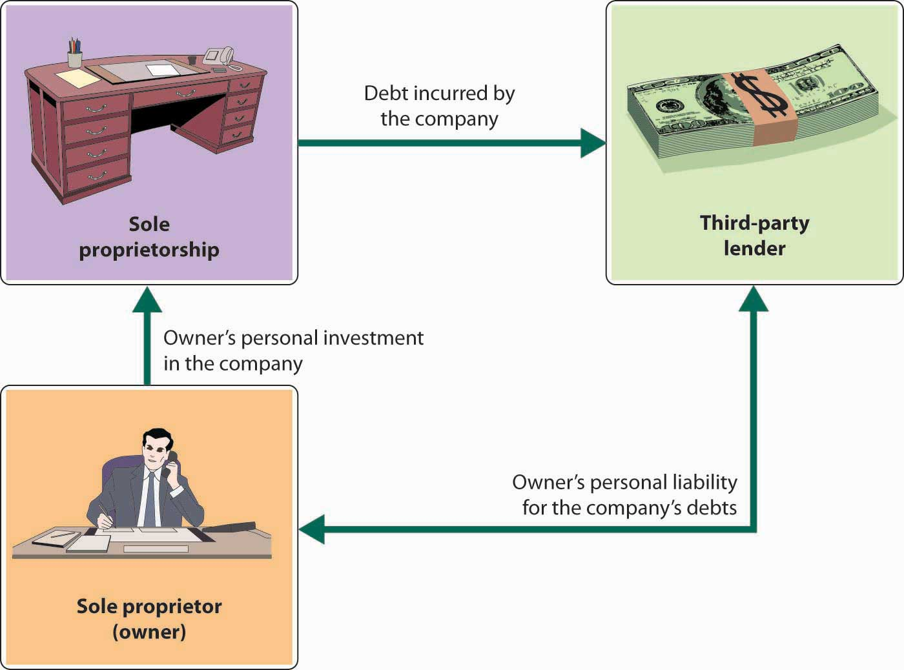

A sole proprietorshipBusiness owned by only one person. is a business owned by only one person. The most common form of ownership, it accounts for about 72 percent of all U.S. businesses.“Number of Tax Returns, Receipts, and Net Income by Type of Business,” The 2012 Statistical Abstract: The National Data Book, January 30, 2011, http://www.census.gov/compendia/statab/cats/business_enterprise/sole_proprietorships_partnerships_corporations.html (accessed January 27, 2012). It’s the easiest and cheapest type of business to form: if you’re using your own name as the name of your business, you just need a license to get started, and once you’re in business, you’re subject to few government regulations.
As sole owner, you have complete control over your business. You make all important decisions, and you’re generally responsible for all day-to-day activities. In exchange for assuming all this responsibility, you get all the income earned by the business. Profits earned are taxed as personal income, so you don’t have to pay any special federal and state income taxes.
For many people, however, the sole proprietorship is not suitable. The flip side of enjoying complete control, for example, is having to supply all the different talents that may be necessary to make the business a success. And if you die, the business dissolves. You also have to rely on your own resources for financing: in effect, you are the business, and any money borrowed by the business is loaned to you personally. Even more important, the sole proprietor bears unlimited liabilityLegal condition under which an owner or investor is personally liable for all debts of a business. for any losses incurred by the business. As you can see from Figure 4.2 "Sole Proprietorship and Unlimited Liability", the principle of unlimited personal liability means that if the company incurs a debt or suffers a catastrophe (say, getting sued for causing an injury to someone), the owner is personally liable. As a sole proprietor, you put your personal assets (your bank account, your car, maybe even your home) at risk for the sake of your business. You can lessen your risk with insurance, yet your liability exposure can still be substantial. Given that Ben and Jerry decided to start their ice cream business together (and therefore the business was not owned by only one person), they could not set their company up as a sole proprietorship.
Figure 4.2 Sole Proprietorship and Unlimited Liability
Advantages of a sole proprietorship include the following:
Disadvantages of a sole proprietorship include the following:
(AACSB) Communication
Talk with a sole proprietor about his or her selected form of business ownership. Ask him or her which of the following dimensions (discussed in this section) were important in deciding to operate as a proprietor: setup costs and government regulations, control, profit sharing, income taxes, skills, continuity and transferability, ability to obtain financing, and liability exposure. Write a report detailing what you learned from the business owner.